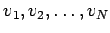

Inhalt Index DeskTop Bronstein

 Differentialgleichungen Partielle Differentialgleichungen Nichtlineare partielle Differentialgleichungen, Solitonen Korteweg-de-Vries-Gleichung
Differentialgleichungen Partielle Differentialgleichungen Nichtlineare partielle Differentialgleichungen, Solitonen Korteweg-de-Vries-Gleichung


Die KdV-Gleichung für die Evolutionsfunktion u lautet
Sie hat die Soliton-Lösung
Dieses KdV-Soliton ist durch die zwei dimensionslosen Parameter und  eindeutig bestimmt, und ist in der Abbildung ist v=1 dargestellt. Ein typisch nichtlinearer Effekt besteht darin, daß die Solitongeschwindigkeit v die Amplitude und die Breite des Solitons bestimmt: KdV-Solitonen mit größerer Amplitude und geringerer Breite bewegen sich schneller als solche mit kleinerer Amplitude und größerer Breite. Die Solitonphase
eindeutig bestimmt, und ist in der Abbildung ist v=1 dargestellt. Ein typisch nichtlinearer Effekt besteht darin, daß die Solitongeschwindigkeit v die Amplitude und die Breite des Solitons bestimmt: KdV-Solitonen mit größerer Amplitude und geringerer Breite bewegen sich schneller als solche mit kleinerer Amplitude und größerer Breite. Die Solitonphase  beschreibt die Lage des Maximums des Solitons zur Zeit
beschreibt die Lage des Maximums des Solitons zur Zeit
Die Gleichung (9.134) besitzt auch N-Solitonenlösungen. Eine solche N-Solitonenlösung läßt sich für  asymptotisch durch lineare Überlagerung von Ein-Solitonlösungen darstellen:
asymptotisch durch lineare Überlagerung von Ein-Solitonlösungen darstellen:
| (9.136) |
Dabei ist jede Evolutionsfunktion un(x,t) durch eine Geschwindigkeit vn und eine Phase gekennzeichnet. Die Anfangsphasen vor der Wechselwirkung oder dem Stoßprozeß unterscheiden sich von den Endphasen nach dem Stoß , während die Geschwindigkeiten  keine Änderung erfahren, d.h., es handelt sich um eine elastische Wechselwirkung.
Für N=2 besitzt (9.134) eine 2-Solitonenlösung. Sie läßt sich für endliche Zeiten nicht durch lineare Überlagerung darstellen und lautet mit und :
Diese Gleichung (9.137) beschreibt asymptotisch zwei für  nicht wechselwirkende Solitonen mit den Geschwindigkeiten v1=4k12 und , die nach einem Wechselwirkungsprozeß für
nicht wechselwirkende Solitonen mit den Geschwindigkeiten v1=4k12 und , die nach einem Wechselwirkungsprozeß für  wieder asymptotisch in zwei nichtwechselwirkende Solitonen mit denselben Geschwindigkeiten übergehen.
wieder asymptotisch in zwei nichtwechselwirkende Solitonen mit denselben Geschwindigkeiten übergehen.
Die nichtlineare Evolutionsgleichung
| (9.138b) |
eine Solitonlösung und